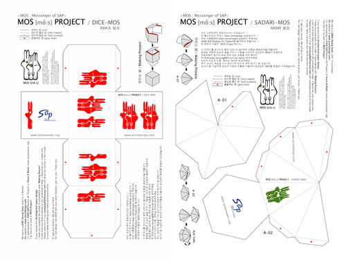

MOS Project : MOS(Messenger of SAP)를 통한 지역과 시간의 경계를 넘어선 소통
MOS(Messenger of SAP)라는 이름을 가진 SAP의 상징을 창조한다/
갖가지 SAP 관련 소식을 수집한다/
간단한 종이모형들을 디자인한다/
종이모형의 전개도에 SAP의 소식, MOS 프로젝트와 관련된 미션을 적는다/
온라인 오프라인을 통해 전개도를 퍼뜨린다/
지역과 시간을 넘어선 미션수행자들의 결과물들을 이메일로 받는다/
SAP의 기간이 끝나도 미션 수행자들은 결과물들을 보낼 것이다.
MOS Project: Communication that overcomes the boundaries of region and time through MOS (Messenger of SAP)
Create a symbol that represents SAP named MOS (Messenger of SAP)/Collect various news about SAP/Design simple paper patterns/Write down the news about SAP and missions relevant to the MOS project onto a development figure made of the paper patterns/ Spread the development figure around on-and off-line/ Receive e-mails about the completion of the missions from participants /The participants will constantly send replies even after the SAP ends.
2009-01-08
saptap.egloos.com 에서 옮김